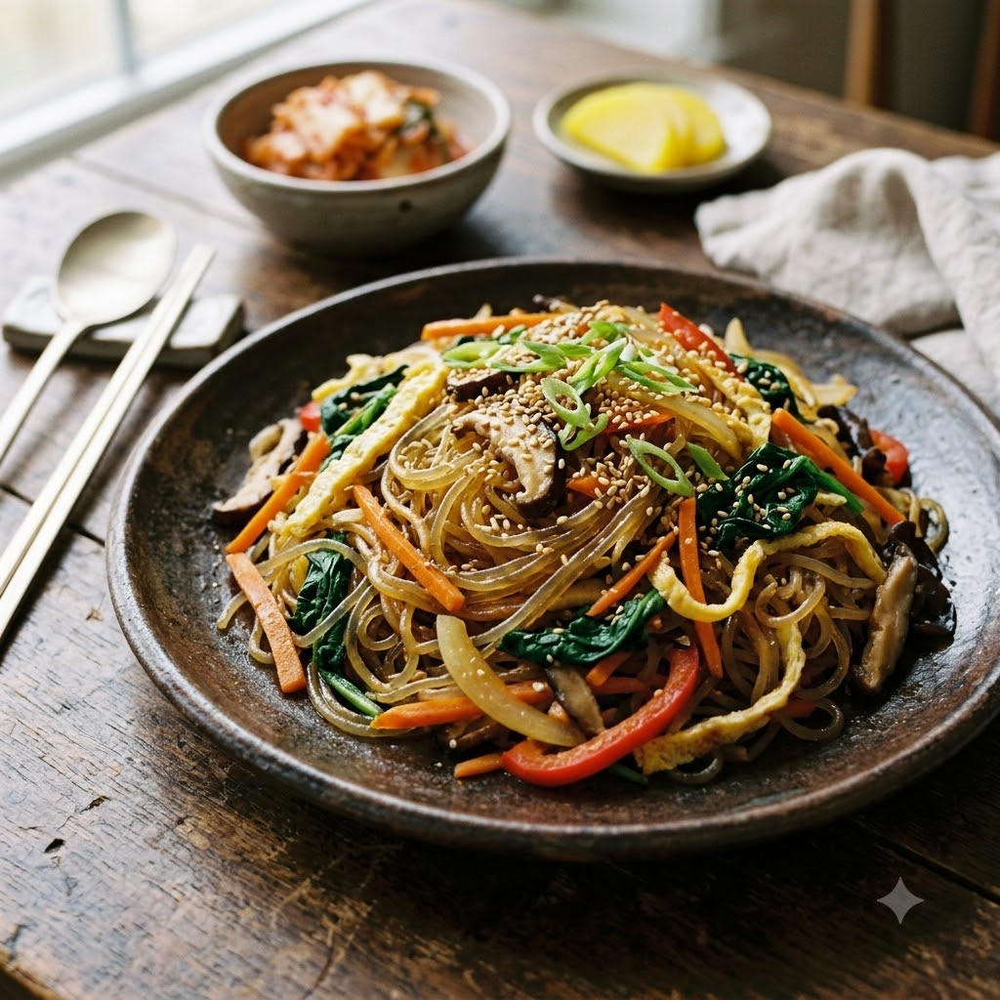

Japchae (Glass Noodle Stir-Fry)

Japchae (Glass Noodle Stir-Fry)
Chef Magic – Sauté 12 min — Serves 4
Vegetarian • Korean • Everyday
🧑🍳 Chef Magic🍽 Serves 4
Ingredients
- 200g sweet potato glass noodles (dangmyeon)
- 1 carrot, julienned
- 1 capsicum, thinly sliced
- 1 onion, thinly sliced
- 2 cups spinach
- 3 cloves garlic, minced
- 3 tbsp soy sauce
- 2 tbsp sugar
- 1 tbsp sesame oil
- 2 tbsp neutral oil
- Toasted sesame seeds, to garnish
Method
1Soak the glass noodles in warm water for 20 minutes until pliable, then drain.
2Add the oil to the jar; select Sauté (Speed 2–3, ~140–150°C) and cook the garlic and onion for 2 minutes until fragrant.
3Add the carrot and capsicum; stir-fry for 3–4 minutes until just tender.
4Add the spinach and cook for 1 minute until wilted.
5Add the soaked noodles, soy sauce and sugar; toss everything together for 4–5 minutes until the noodles are glossy and evenly coated.
6Turn off the heat and stir in the sesame oil. Garnish with sesame seeds and serve warm or at room temperature.
Tip: Cut the noodles a few times with kitchen scissors after cooking — full-length dangmyeon can be tricky to serve and eat neatly.